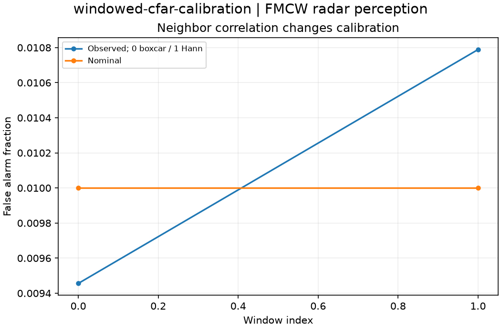

Reproducible FMCW radar perception. Units and field components are printed on the scientific axes. peak d-q quantities use exp(+i omega t); terminal currents point into the protected line.
Sealed numeric archive | Summary CSV | Physical parameters | Run request | Source and environment

| boxcar_rate | 0.009455605158730158 |
|---|---|
| hann_rate | 0.010788690476190476 |
These are simulations, not hardware measurements. Network-model, measurement, timing and statistical uncertainty require distinct convergence checks. Singular or unilluminated data use explicit masks.
Source revision: af791fbe32a93bb2174ccbd885b148ddbea28e4d.
Dirty checkout: False.
Configuration SHA-256: a44871e21e596f7e3dfff9c7bea0a6979818a33984f9295a1868255902d4c791.
Replay preserves original source and parameter provenance. SHA-256 manifests detect changed bytes; they are unsigned integrity records, not certificates of physical validity.